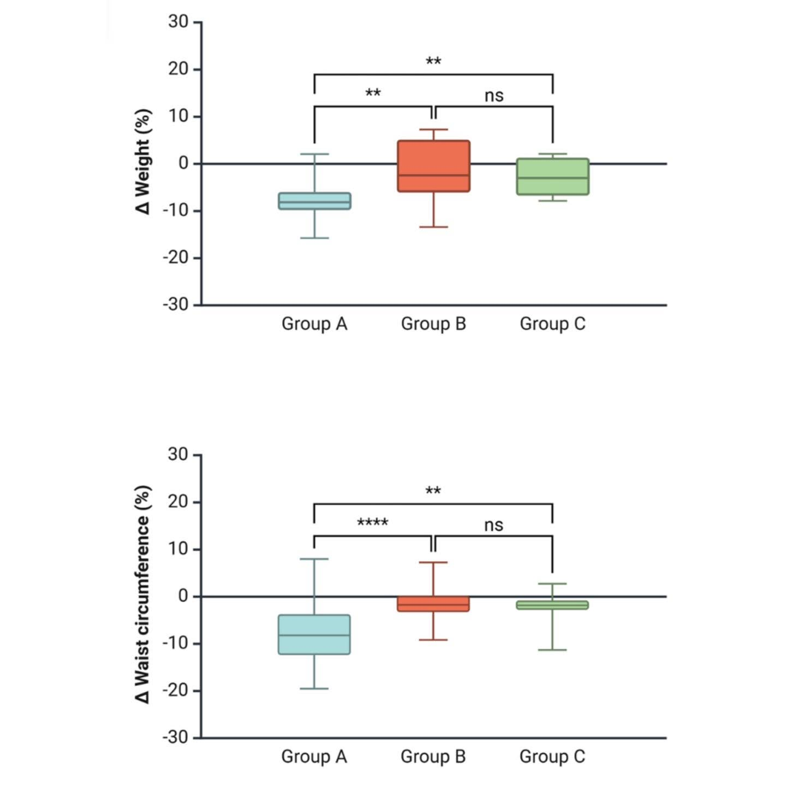
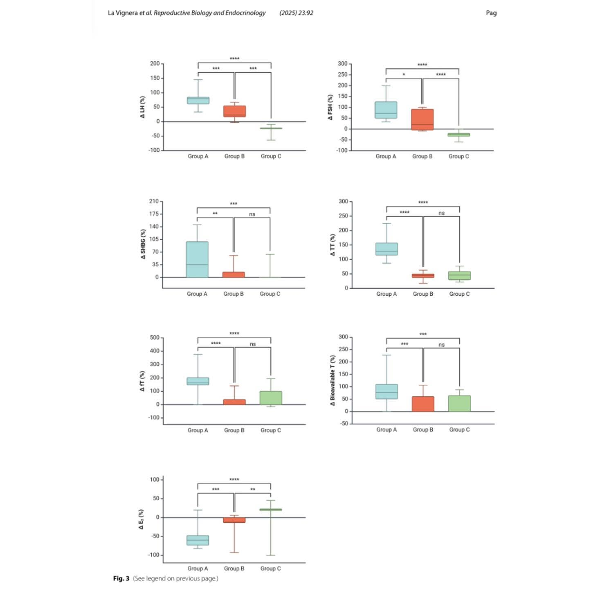

This is not surprising. The primary cause of low testosterone in middle age men is excess visceral fat. Lose the fat and the testosterone normalizes on its own.
Don’t let quacks at a TRT clinic try to convince you that you need to take exogenous testosterone, when all you really need to do is clear out your visceral fat. Treat the root cause, not the symptoms.
#glp1HD #trtHD #testosteroneHD #weightlossHD #calorierestrictionHD
Small pilot study shows that tirzepatide to treat the obesity that causes “#LowT” is better (as expected) than #TRT
The study included a total of 83 individuals with obesity with a mean BMI of 34.9 kg/m2 and a median age of 55.3 years.
They were categorized into three treatment groups:
Group A (n = 28) received tirzepatide weekly (2.5 mg in the first month, and 5 mg in the second month) combined with lifestyle changes
Group B (n = 30) followed lifestyle interventions only with no pharmacological treatment
Group C (n = 25) received testosterone replacement therapy (23 mg of transdermal testosterone from day 1 to day 14, and dose adjustment based on serum levels of TT levels after the 2 weeks) alongside lifestyle changes.
Lifestyle interventions were a hypocaloric diet and a 20-minute daily walk, made to fit the specific needs of each patient.
After 2 months of treatment, group A demonstrated significant reductions in weight, waist circumference, BES score, and fat mass percentage, along with an increase in lean mass percentage (P < 0.001 across all parameters).
Intergroup analysis revealed that group A had the greatest decrease in body weight, BMI, WC, BES score, and fat mass (P < 0.000001 across all) and a boost in lean mass (P = 0.03), compared to counterparts in groups B and C.
The team also found increased serum levels of LH, FSH, and total testosterone, with the lowest 17β-estradiol(E2) levels (P < 0.000001 across all parameters) in group A, compared to groups B and C.
#testosterone #weightloss #zepbound #mounjaro #health


